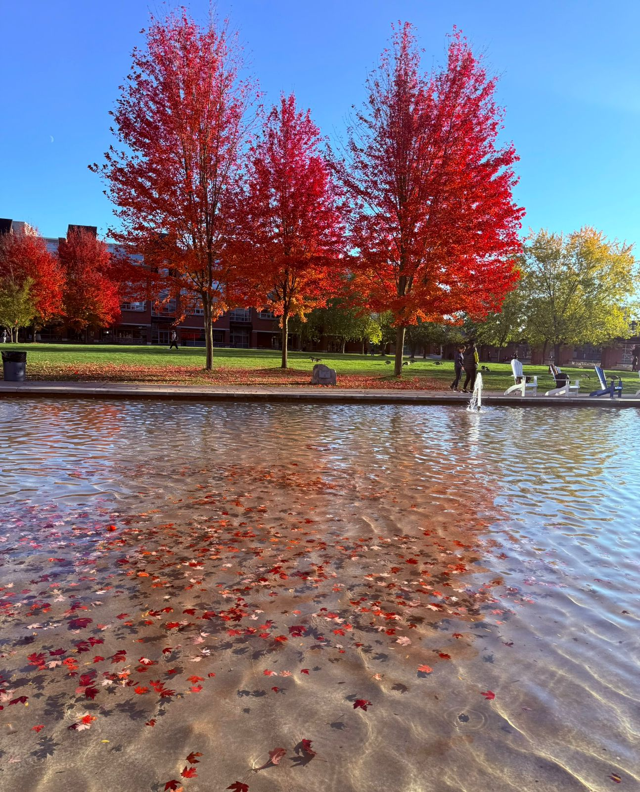
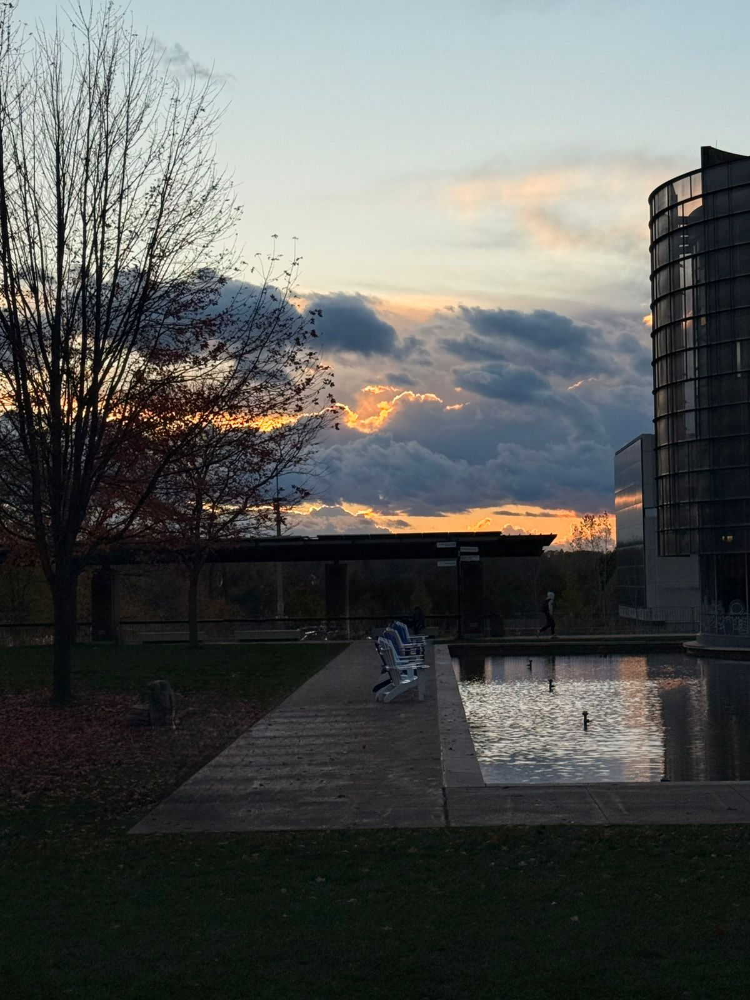
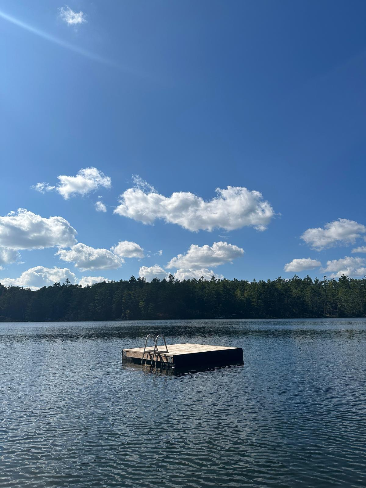
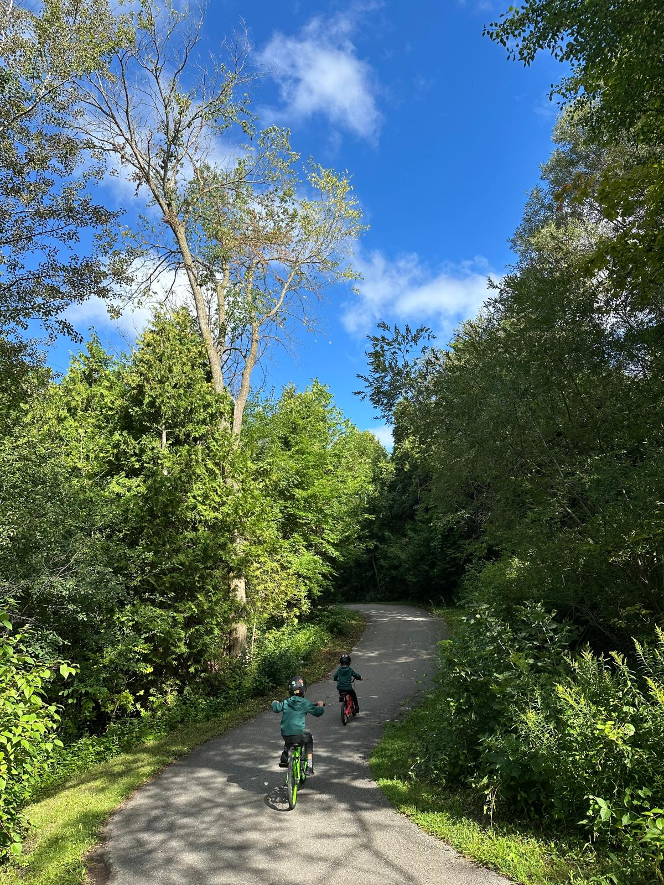
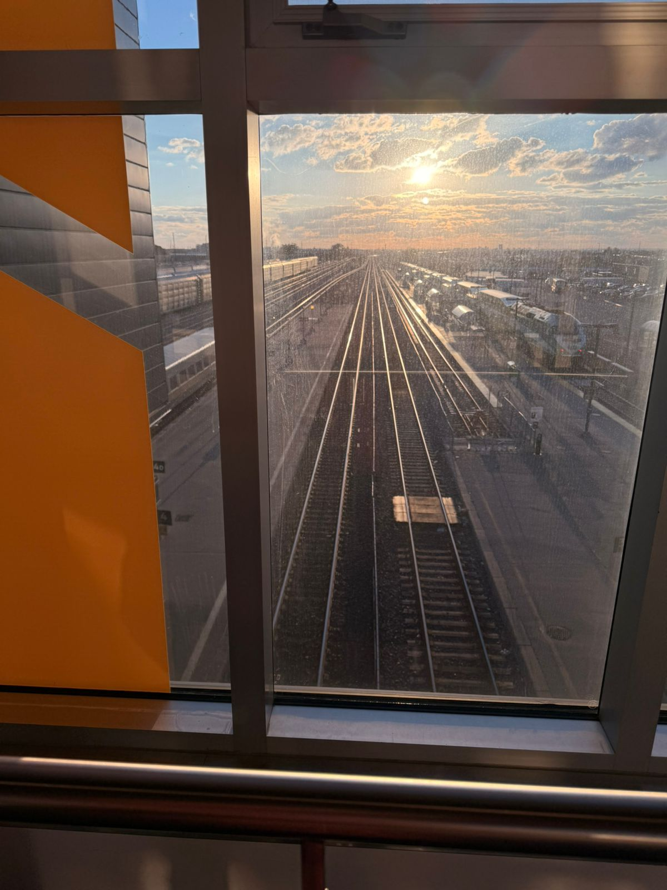
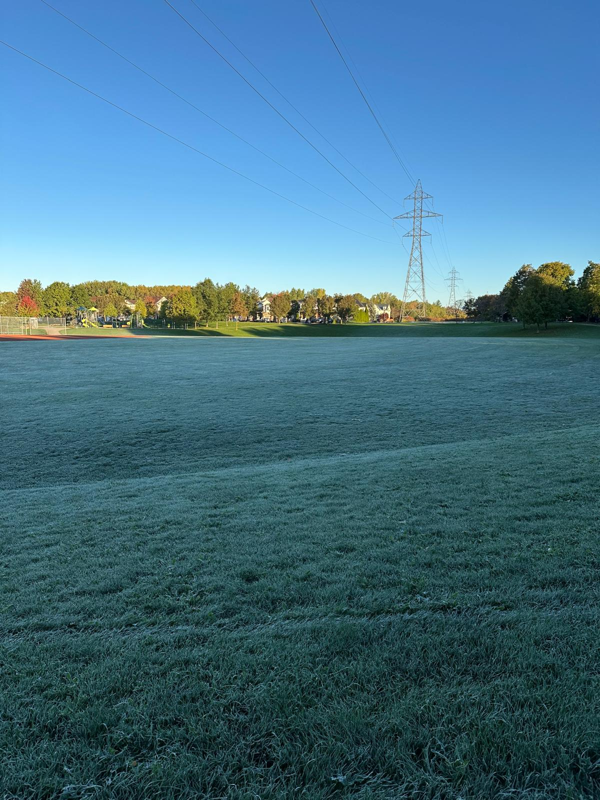
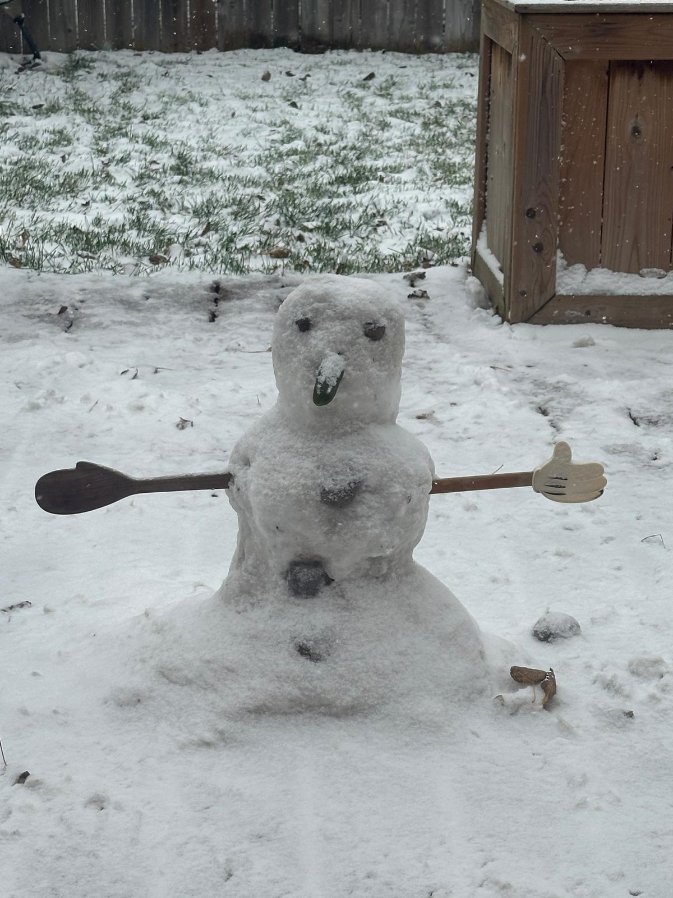

Data Story · Information Design
Reimagining John Snow’s cholera map
An interactive retelling of the 1854 cholera outbreak in London, inviting viewers to explore how one street, one pump, and one map changed the story of public health.
Academic portfolio
A Brazilian mind in motion, reshaping my career to grow on Canadian soil.








FRAGMENTS OF MY LIFE IN CANADA: CAMPUS, CITY, AND IN‑BETWEEN MOMENTS.
I pressed pause on my career in Brazil to move my young family to Canada and face the uncertainty of starting again: new country, new language, new academic path. This portfolio chronicles that decision - and the research, projects, and data stories that emerged from it.
I am a data-driven leader transitioning from Industry to Academia after 19 years developing Financial, BI, and Machine Learning solutions in Brazil. I decided to move to Canada to further my research, broaden my perspective, and test myself in a new environment.
This portfolio offers a curated view of that shift: academic work, projects, and experiments. It is more an ongoing visual essay about learning across different geographies, industries, and disciplines.
Data Story · Information Design
An interactive retelling of the 1854 cholera outbreak in London, inviting viewers to explore how one street, one pump, and one map changed the story of public health.
Persuasive Infographic · Demography
A persuasive infographic that uses population projections to 2051 to show how immigration drives Ontario’s growth while rapid aging reshapes demand for work, health care, and social support.
UX Research · Personas
A set of four research‑based personas connecting international students, recent grads, mid‑career workers, and recruiters, used to align an AI‑skills platform with the real fears, goals, and constraints of people in Durham Region.
Research · Data Story
An interactive story set at an Ontario Tech job fair, where four characters walk through real unemployment, automation and skills data to show, scene by scene, how AI is quietly rewriting Durham’s job market.
Data Story · Storyboard
Storyboard for a visual essay on inequality in Brazil’s public schools, following one week in different classrooms to connect commute, class size, and community support with who falls behind and why.
Data Story · Dashboard
Dashboard concept built from 9,800+ records of Ontario public library statistics (1999–2024), reconciling changing schemas to compare funding, population and circulation with normalized KPIs instead of raw totals.